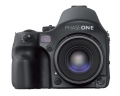

器材库 > 大中画幅可换镜头数码相机 > 645AF

规格总览
产品类型
大中画幅可换镜头数码相机
发布日期
2008-03-10
影像规格
影像传感器
CCD
影像传感器尺寸
53.9 × 40.4mm
有效像素
6050万
色彩空间
RGB，Embedded ICC profile，CMYK
最大解像度
8984 × 6732
静态图像格式
JPEG, TIFF-RGB, TIFF-CMYK
静态图像尺寸
8984 × 6732
画幅比
4:3
镜头和对焦
镜头卡口
Mamiya 645 AF
兼容镜头
飞思数码和玛米亚645 AFD镜头, 通过转接环可使用哈苏V系列镜头
对焦系统类型
TTL phase-difference AF
对焦点
3点
对焦模式
AF、MF
手动对焦
支持
曝光控制
测光系统
TTL
测光模式
中央重点测光, 点测光
快门速度
1/4000秒 - 60分钟；闪光同步速度：焦平面快门为1/125秒，叶片式快门镜头为1/800秒
曝光补偿
±5EV
自动曝光锁
有
取景器/显示屏
屈光度调节范围
-5.0 ~ +3.0
LCD尺寸
2.2英寸
LCD像素
23万
电源
电池
6枚AA电池
机身规格
尺寸
153 × 128 × 184mm
重量
1030g
其它
用户自选功能
36种
工作温度
0-40℃
工作湿度
15-80%
该产品暂无存档的网友点评
产品图 / 样片
645AF